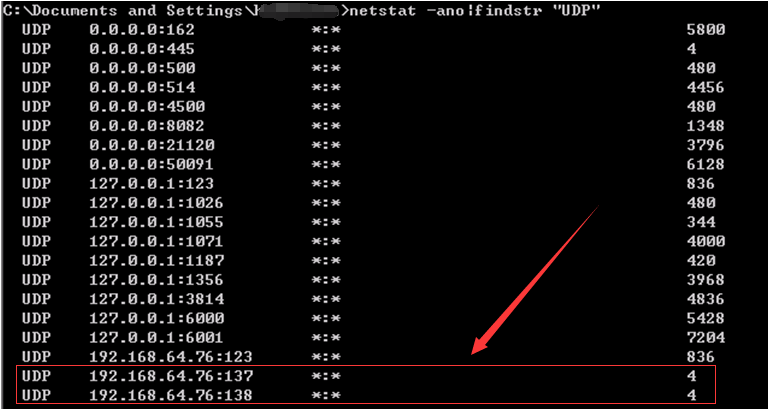
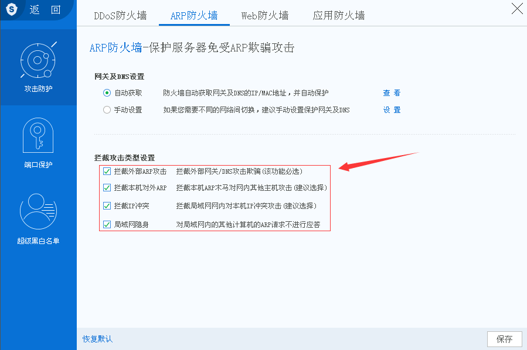

第4篇：ARP病毒
0x00 前言
ARP病毒并不是某一种病毒的名称，而是对利用arp协议的漏洞进行传播的一类病毒的总称，目前在局域网中较为常见。发作的时候会向全网发送伪造的ARP数据包，严重干扰全网的正常运行，其危害甚至比一些蠕虫病毒还要严重得多。
0x01 应急场景
某天早上，小伙伴给我发了一个微信，说192.168.64.76 CPU现在负载很高，在日志分析平台查看了一下这台服务器的相关日志，流量在某个时间点暴涨，发现大量137端口的UDP攻击。

0x02 分析过程
登录服务器，首先查看137端口对应的进程，进程ID为4对应的进程是SYSTEM，于是使用杀毒软件进行全盘查杀。

卡巴斯基绿色版：http://devbuilds.kaspersky-labs.com/devbuilds/KVRT/latest/full/KVRT.exe
卡巴斯基、360杀毒、McAfee查杀无果，手工将启动项、计划任务、服务项都翻了一遍，并未发现异常。 本地下载了IpTool抓包工具，筛选条件： 协议 UDP 端口 137

可以明显的看出192.168.64.76发送的数据包是异常的，192.168.64.76的数据包目的地址，一直在变，目的MAC是不变的，而这个MAC地址就是网关的MAC。
端口137的udp包是netbios的广播包，猜测：可能是ARP病毒，由本机对外的ARP攻击。
采用措施：通过借助一些安全软件来实现局域网ARP检测及防御功能。
服务器安全狗Windows版下载：http://free.safedog.cn/server_safedog.html
网络防火墙--攻击防护--ARP防火墙：

虽然有拦截了部分ARP请求，但流量出口还是有一些137 UDF的数据包。
看来还是得下狠招，关闭137端口：禁用TCP/IP上的NetBIOS。
1）、禁用Server服务

2）、禁用 TCP/IP 上的 NetBIOS

设置完，不用重启即可生效，137端口关闭，观察了一会，对外发起的请求已消失，CPU和网络带宽恢复正常。
0x04 防护措施
局域网安全防护依然是一项很艰巨的任务，网络的安全策略，个人/服务器的防毒机制，可以在一定程度上防止病毒入侵。
另外不管是个人PC还是服务器，总还是需要做一些基本的安全防护：1、关闭135/137/138/139/445等端口 2、更新系统补丁。